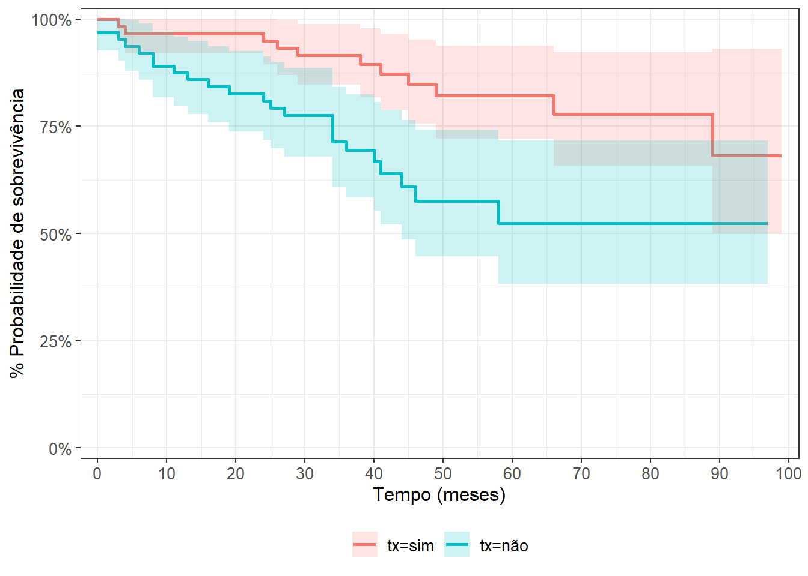
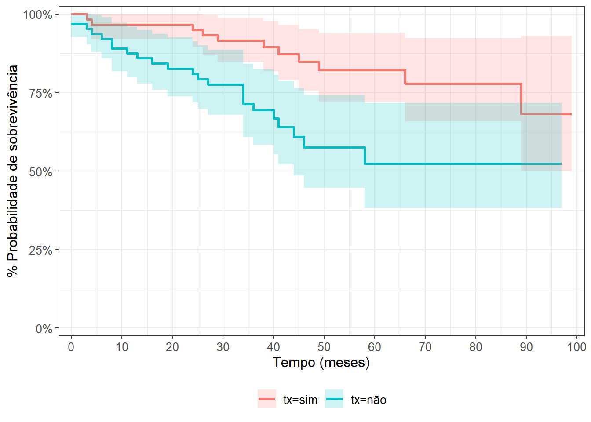
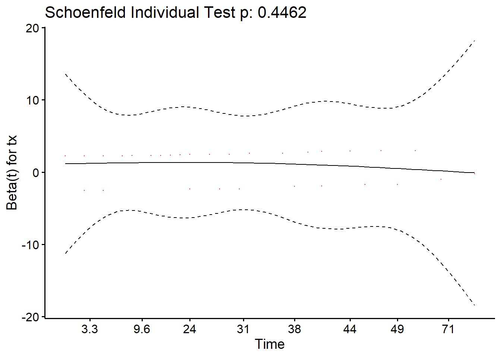

fit2_km
A análise de sobrevida é uma técnica estatística utilizada para investigar o tempo até a ocorrência de um evento, como a falha de um dispositivo, o desenvolvimento de uma doença ou a morte.
Desenho de Estudo Sugerido: Um estudo de coorte prospectivo com acompanhamento a longo prazo, onde os participantes são monitorados ao longo do tempo, registrando eventos de interesse e o tempo até a ocorrência desses eventos.
Exemplo: Avaliação da sobrevida de pacientes com uma doença crônica específica, registrando o tempo até a progressão da doença ou ocorrência de eventos adversos, a fim de identificar fatores associados à sobrevida prolongada.
No contexto da análise de sobrevida, a regressão de Cox, também conhecida como modelo de riscos proporcionais de Cox, é uma ferramenta essencial. Essa abordagem, desenvolvida por David R. Cox, permite avaliar a influência de variáveis independentes no tempo até o evento de interesse, mantendo a suposição de proporções constantes de risco ao longo do tempo. No ambiente estatístico R, a implementação da análise de sobrevida e da Cox regression é amplamente realizada por meio de pacotes como “survival” e “survminer”.
Assim como nas outras regressões abordadas anteriormente, a Cox Regression também possui certos pré-requisitos. Dada a relevância desse tema, optamos por apresentar esses pressupostos antes mesmo de iniciar os exercícios.
A Regressão de Cox é uma técnica robusta, mas, como qualquer método estatístico, possui alguns pressupostos importantes. Os principais pressupostos da Regressão de Cox são:
Proporcionalidade dos Riscos:
Independência Censura:
Linearidade no Logaritmo dos Riscos:
Auscência de Colinearidade:
Ausência de Efeito de Interferência:
Adequação do Modelo:
Os pressupostos de 2 a 6 são inerentes ao desenho do experimento e do acompanhamento durante as observações. O único que vamos abordar aqui no tutorial é o de proporcionalidade dos riscos.
Temos duas formas de avaliar a proporcionalidade dos riscos
Ao analisar o gráfico de Kaplan-Meier para diferentes grupos, é crucial observar se as curvas de sobrevivência são aproximadamente paralelas ou se cruzam entre si. Se as curvas são paralelas, isso sugere proporcionalidade dos riscos, indicando que as diferenças nas taxas de falha entre os grupos são constantes ao longo do tempo. No entanto, se as curvas se cruzam, isso indica uma possível violação da proporcionalidade dos riscos.
Cruzamentos nas curvas podem indicar mudanças na relação de risco entre os grupos ao longo do tempo. Essa mudança pode ser devido a diferentes dinâmicas de risco em períodos distintos do estudo. Se as curvas se cruzarem, a aplicação da Regressão de Cox não deve ser feita para não gerar interpretações erradas!
fit2_km
Podemos observar que em nosso exemplo as linhas de sobrevida não cruzam, portanto podemos assumir que os riscos são proporcionais pela análise gráfica.
A segunda forma para se avaliar a suposição de proporcionalidade dos riscos na Regressão de Cox vamos utilizar o teste de Schoenfeld, que verifica se há uma relação sistemática entre os resíduos de Schoenfeld e o tempo, o que indicaria uma violação dessa suposição.
A ideia central é que, se os resíduos de Schoenfeld não apresentarem uma relação significativa com o tempo, isso sugere que a proporcionalidade dos riscos é razoável. Logo, a hipótese nula é que não há relação entre os resíduos e o tempo, o que indicaria proporcionalidade dos riscos. O teste estatístico avalia se é razoável rejeitar essa hipótese nula.
Vamos torcer para o valor de p ser MAIOR que 0.05!
Utilizando a função cox.zph() do pacote survival temos o seguinte código:
test <- survival::cox.zph(cox_res)
test chisq df p
tx 0.58 1 0.45
GLOBAL 0.58 1 0.45Ok! Temos riscos proporcionais!
Outra forma de verificar a proporcionalidade dos riscos é com o gráfico dos resíduos de Schoenfeld.
# Plot the Schoenfeld residuals over time for each covariate
survminer::ggcoxzph(test, point.size = 0.1)[1]$`1`
Se os resíduos mostrarem um padrão claro ao longo do tempo, isso pode indicar uma violação da suposição de riscos proporcionais.
Algumas dicas para ajudar na interpretação:
Sem Padrão (Resíduos Constantes): Se os resíduos aparecerem aleatoriamente espalhados em torno de zero, sem nenhuma tendência ou padrão claro, isso sugere que a suposição de riscos proporcionais é razoável.
Tendência Linear: Uma tendência linear (aumentando ou diminuindo) nos resíduos ao longo do tempo pode sugerir uma violação da suposição de riscos proporcionais. Por exemplo, se os resíduos forem consistentemente positivos ou negativos ao longo do tempo, isso indica um efeito dependente do tempo.
Padrão Não Linear: Se os resíduos exibirem um padrão não linear ou formatos específicos (por exemplo, formato de U, formato de V), isso pode indicar desvios dos riscos proporcionais.
Paralelismo: Paralelismo significa que a propagação e distribuição dos resíduos são relativamente constantes ao longo do tempo. Se os resíduos aumentarem ou diminuirem ao longo do tempo, isso pode sugerir uma violação da suposição.
Retomaremos a discussão sobre os pressupostos ao desenvolvermos nosso primeiro modelo e também o que fazer quando o pressuposto da proporcionalidade dos riscos é violado.